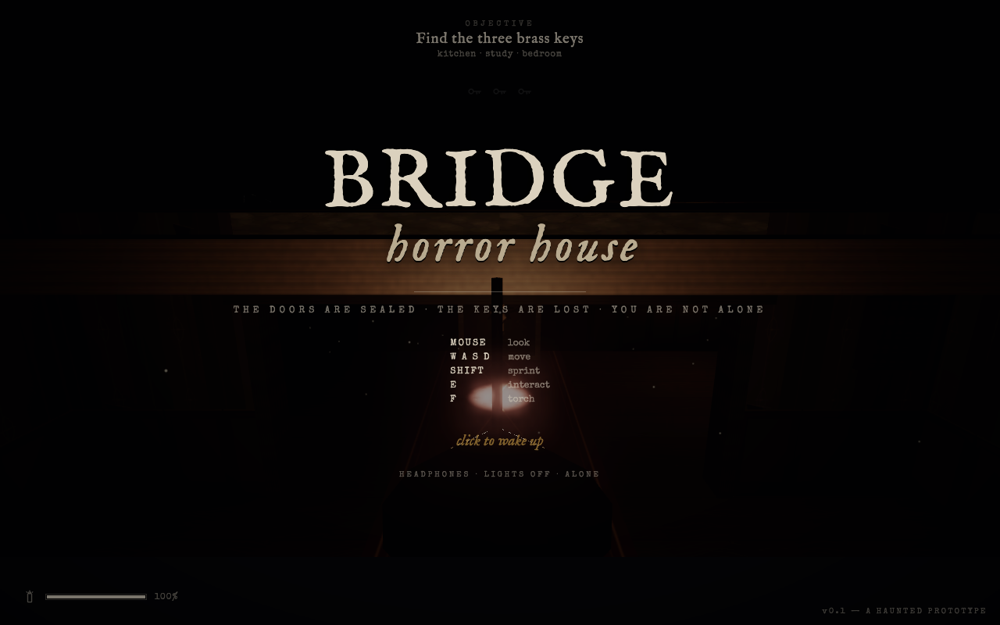
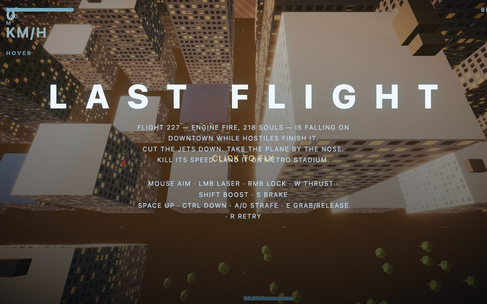

Lava Lamp
Photoreal ray-marched lava lamp studio shot.
hardrtok 33,815offline ok
open ▸
every artifact of the GLM 5.3 Flash sweep — batch #97 — on one page
Photoreal ray-marched lava lamp studio shot.
Build a Minecraft clone as a single self-contained HTML file.
Photoreal Three.js rocket launch scene as a single HTML file.
Photoreal Three.js sunset ocean scene as a single HTML file.
XPBD soft-body watermelon slice — squish, pinch, drop, cut.
AAA-quality Mario Kart clone using Three.js.
Skylines-II-class city builder via multi-agent critique loop.
First-person haunted-house escape game (Vite + Three.js). Full rebuild from blueprint: 13/13 files materialized, npm build succeeds, headless smoke reaches the playing-state render loop with a spotless console. Smoke screenshot:

Cinematic 3D superhero flight/rescue game (Three.js + TypeScript + Vite). 51 files materialized, typecheck repaired to 0 errors, build + smoke pass — the 5 failing sim tests are pre-existing blueprint defects, reproduced on the pristine copy. Smoke screenshot:

Expo/NestJS monorepo — needs Docker + a physical phone; not browser-demoable. See the design doc for the full architecture.
Five Service Catalog user stories with Gherkin acceptance criteria.
The 10 game/app prompts re-run against vllm/release/gpt-oss-120b (batch #112), through the same headless-Chromium verifier as the flash sweep. Result: 0 / 10 PLAYABLE_VERIFIED — a full capability verdict, not just a boot-paint. Assessed collaboratively on issue #178.
const u/v reassignment — a const declared then reassigned crashes at line 174. Boot dies before the simulation runs.
Paints (spread 83, 0 console errors) but no sustained motion. The shader loop advances iTime but the wax displacement is too low-contrast to cross the motion bar.
After a CDN fix (cdnjs 404s in-sandbox; jsdelivr works) a real bug surfaces: Cannot read properties of null (reading 'layers') — a null scene/camera reaches renderer.render() every frame.
Closest to playable — paints, animates sustained, has a click transition — but 5 console errors from two independent bug clusters: a GLSL vec3 = float mismatch and four gui.add type errors. Two bugs, not one fix.
Crashes at boot — same THREE namespace-mismatch family as horror-house.
Builds green, breaks at runtime — a THREE namespace bug: import {Vector3} but calls THREE.Vector3. Highest-yield fix across all 10 (one line per file).
Same THREE namespace-mismatch family as horror-house.
Emits a design blueprint, no runnable code.
result ▸Blueprint + partial code — did not finish.
result ▸Emits a design blueprint, no runnable code.
result ▸
Token signal (measured, not assumed): output tokens
flash 85,963 · gpt-oss-120b 10,111
— the flash model burned ~8.5× more and still failed the hard tier,
while gpt-oss-120b burned far less and also failed. The reasoning_tokens
field was not captured (null), so the reasoning-budget difference is
unmeasured here; the only measured signal is completion length.
Hypothesis read (this dataset): "flash trades depth for speed" is partly supported (flash burned more output, still failed — "more tokens, not smarter"), but the hard-tier results show both tiers failed the same 3D domain at similar rates. There is no Claude verdict in this dataset — gpt-oss-120b and flash are the only models run through the verifier here, so any Claude/ChatGPT comparison is the owner's external hypothesis, not a result measured here.
ServiceNow implication (honest): gpt-oss-120b never ran the ServiceNow prompt, so its behavior there is unknown. The flash ServiceNow catalog story (#138) was a complete, professional artifact — which cuts against "flash can't do technical work," but is unverified against a real ServiceNow schema. The 3D game benchmark is a poor discriminator for ServiceNow work: different domain, different difficulty.